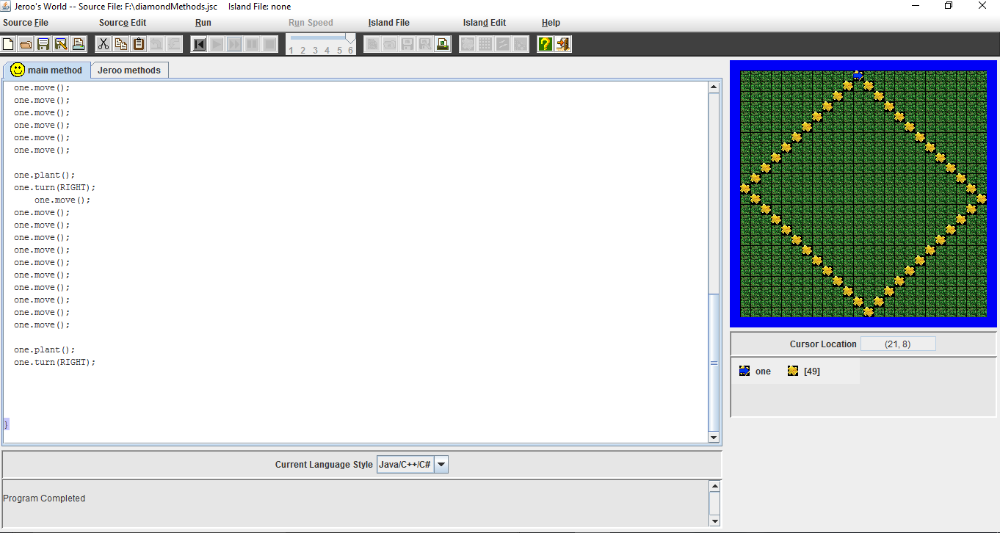
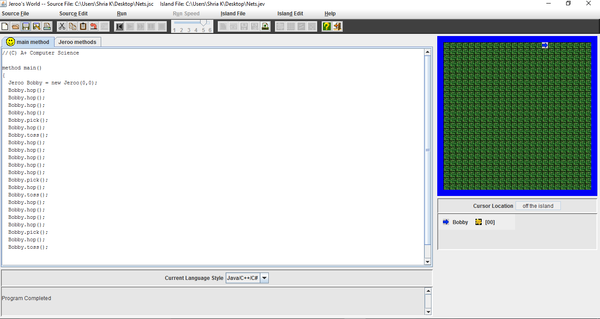
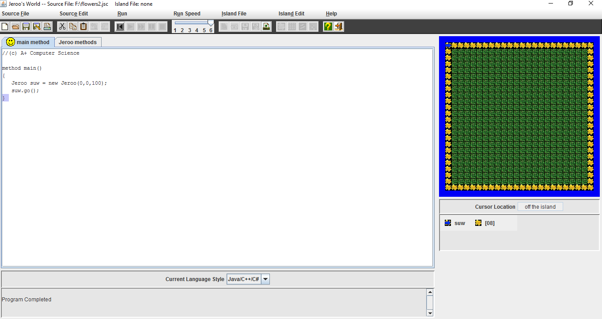
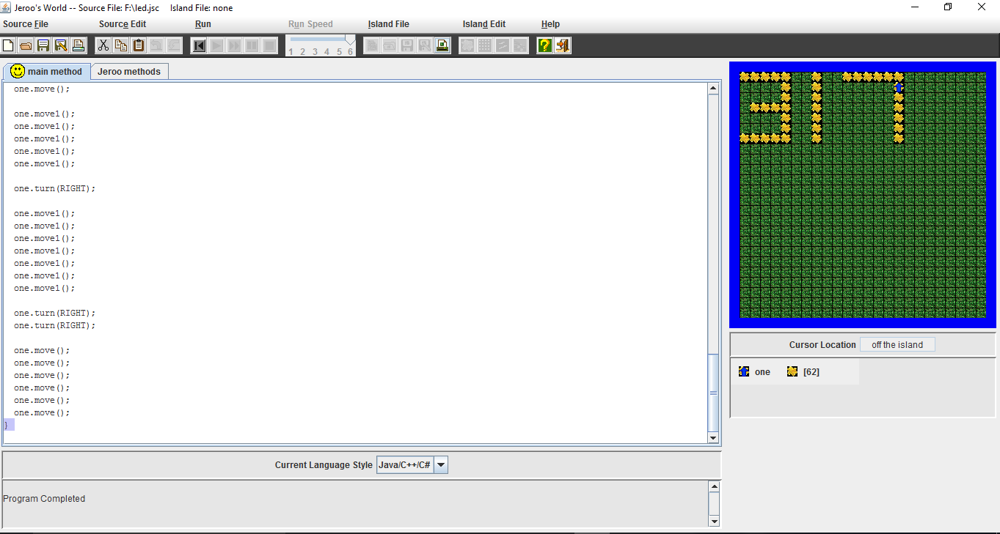
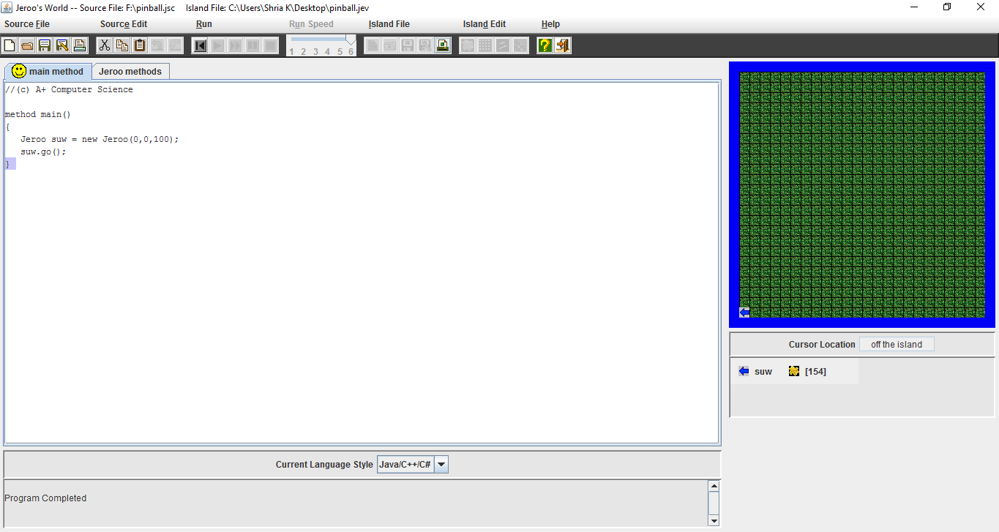
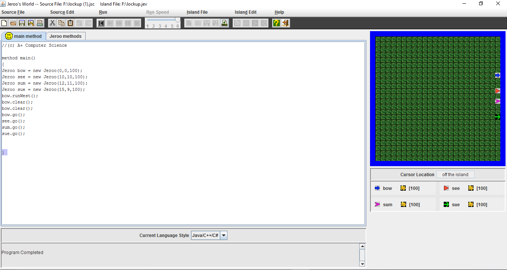
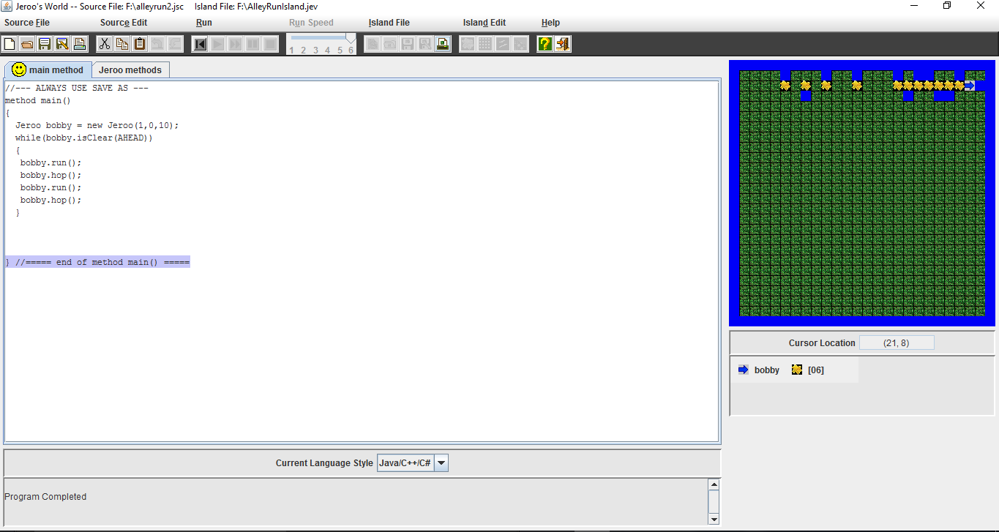

Jeroo Content
Unit 1
 
Description
This lab requires you to use a few commands multiple times. Make sure where you are before you hop. Testing your commands as you go can help you better see your solution and correct mistakes before they cause the Jeroo to run into the net everytime.
Concepts Learned:
- Learned to hop.
- Learned to turn left and right.
- Learned to plant flowers and I also learned to add a new Jeroo.
- I learned to open island files.
Unit 2
 
Description
Create a single method that allows your Jeroo to drop a flower and then move ten steps. Make another method that calls the drop a flower and move ten steps method. Once finished the Jeroo should make a box pattern with flowers in each corner.
Concepts Learned:
- I learned to make methods.
- I learned to put multiple actions into one method.
- I learned to add multiple Jeroos and put them in different places.
- I also learned to make my own island file.
- Discovored a method called "toss();".
Unit 3
 
Description
Create a single method that uses a loop to help Jeroo plant flowers the entire length of one side of the island.
Concepts Learned:
- I learned to make methods and create loops.
- I learned to put multiple actions into one method.
- I learned to add multiple Jeroos and put them in different places.
- I also learned to make my own island file.
- I learned to use bolean methods.
Unit 4

Description
This lab requires that you use looping with if statements. Use a wide variety of if commands. Each cycle of the loop may produce movement on more than 1 conditional at a time.
Concepts Learned:
- I learned to make methods and create loops.
- I learned to put more multiple actions into one method.
- I learned to add multiple Jeroos and put them in different places.
- I also learned to make my own island file.
- I learned to use bolean methods and if commands.